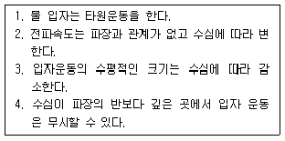
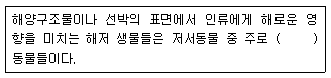

해양조사산업기사 (2009-05-10 기출문제)
1과목: 물리해양학
1. 해양의 베타(β)효과(현상)에 대한설명으로 옳은 것은?
- 해양의 와도가 보존되는 현상
- 표면 파동문제에서 코리올리 전향력을 무시하는 효과
- 유체의 운동방정식에서 cosφ에 비례하는 코리올리 전향력을 무시하는 효과
- 코리올리 전향력이 위도에 따라 증가되는 현상
(정답률: 60%)

2. 코리올리힘(Coriolis force)에 관한 설명 중 틀린 것은?
- 질량에 비례한다.
- 속도에 비례한다.
- 위도의 정현값에 비례한다.
- 경도의 정현값에 비례한다.
(정답률: 75%)
3. 우린나라의 동해안과 서해안의 조석과 조류에 관한 설명 중 옳은 것은?
- 동해안은 조차는 작으나 조류는 세다.
- 동해안은 조차도 작으나 조류도 약하다.
- 서해안은 조차는 크나 조류는 약하다.
- 서해안은 조차는 작으나 조류는 세다.
(정답률: 74%)
4. 우리나라 해안의 염분 상황으로 옳은 것은?
- 서해안이 동해안보다 높다.
- 동해안이 서해안보다 높다.
- 동해안, 남해안, 서해안이 모두 같다.
- 남해안이 가장 높고 서해안은 동해안과 같다.
(정답률: 85%)
5. 천해파의 성질로만 짝지어진 것은?

- 1, 2
- 2, 3
- 3, 4
- 1, 4
(정답률: 60%)
6. 해류를 일으키는 요인과 가장 거리가 먼 것은?
- 해수중의 연직 압력 구배
- 해수중의 수평 압력 구배
- 해상풍
- 해수의 수평 밀도 구배
(정답률: 66%)
7. 북반구에서 연안용승이 나타날 수 있는 가장 적합한 경우는?
- 해안을 향해 바람이 불어갈 때
- 해안을 왼쪽에 두고 육지와 평행하게 남풍의 바람이 불 때
- 바람이 대각선 방향으로 해안 쪽으로 불어갈 때
- 해안을 오른쪽에 두고 육지와 평행하게 북풍의 바람이 불 때
(정답률: 72%)
8. 강제파에 해당하는 것은?
- 너울
- 조석파
- 쓰나미
- 항만의 고유진동
(정답률: 74%)
9. 다 자란 풍랑(fully developed sea)의 발생에 관한 설명 중 옳은 것은?
- 바람의 에너지가 지속적으로 해면으로 전달되기 위해서 평균 풍속보다 파봉의 이동속도가 빨라야 한다.
- 충분히 발달된 파랑을 위해서는 충분한 풍속과 풍향의 잦은 변화가 필요하다.
- 바람이 셀수록 풍파를 충분히 발달시키기 위한 바람지속시간(duration)은 짧아진다.
- 풍속이 셀수록 풍파를 충분히 발달시키기 위한 풍역대(fetch)는 길어진다.
(정답률: 71%)
10. 쿠로시오 해류와 역학적으로 가장 비슷한 성격을 가지고 있는 것은?
- 멕시코 만류
- 남적도 해류
- 캘리포니아해류
- 페루 해류
(정답률: 83%)
11. 오일러식 해류 직접관측을 할 수 있는 기기는?
- ADCP
- ARGOS 부이
- NOAA 위성
- TOPEX/Poseidon 위성
(정답률: 85%)
12. 세계 해양 전체의 평균수심은 약 얼마인가?
- 1 km
- 2 km
- 3 km
- 4 km
(정답률: 74%)
13. 해수 중에서의 음속은?
- 수온이 높을수록 늦고 염분이 높을수록 빠르다
- 염분이 높을수록 늦고 압력이 높을수록 빠르다
- 수온이 높을수록 늦고 압력이 높을수록 빠르다
- 수온이 높을수록 빠르고 압력이 높을수록 빠르다.
(정답률: 69%)
14. 다음 중 해양에서 수평적으로 온도나 염분의 변화가 가장 큰 곳은?
- 약층
- 전선
- 혼합층
- 심층
(정답률: 74%)
15. 해양의 염분을 좌우하는 요소로 가장 거리가 먼 것은?
- 증발
- 강수
- 결빙
- 수온
(정답률: 75%)
16. 평형조석론(the equilibrium theory of the tides)에 관한 설명 중 옳은 것은?
- 전 세계의 조차는 모두 같다.
- 고조와 저조현상에 대한 설명을 할 수 있다.
- 해면은 자신에 미치는 힘과 항상 평형을 이루고 있지 않다는 가정하에 출발한다.
- 기본과정으로 해안선이 복잡하지 않고 직선일 것을 요구한다.
(정답률: 81%)
17. 태음일(lunar day)에 해당하는 것은?
- 24시 50.47분
- 24시 25.24분
- 24시 00.00분
- 23시 58.45분
(정답률: 73%)
18. 우리나라 근해 해류에 있어서 코리올리스의 힘(Coriolis force)이 작용하는 방향은?
- 진행방향의 뒤쪽
- 진행방향의 앞쪽
- 진행방향의 왼쪽
- 진행방향의 오른쪽
(정답률: 90%)
19. 일조부등(diurnal inequality)이 극히 작은 시기의 조석은?
- 회귀조(tropic tide)
- 근지점조(perigean tide)
- 원지점조(apogean tide)
- 분점조(equinoctial tide)
(정답률: 81%)
20. 우리나라 근해에 영향을 미치는 해류는?
- 쿠로시오 해류
- 리만 해류
- 쓰시마 해류
- 황해 난류
(정답률: 61%)
2과목: 화학해양학
21. 해수 중의 탄산염 침전을 촉진하는 요소가 아닌 것은?
- 수온의 상승
- 낮은 압력
- 광합성
- 호흡작용
(정답률: 36%)
22. 해수의 염분을 측정하는 방법으로 가장 거리가 먼 것은?
- 무게에 의한 방법
- 압력에 의한 방법
- 염소량에 의한 방법
- 전도도에 의한 방법
(정답률: 80%)
23. 원자력 발전소에서 해양에 배출되는 온배수의 영향이 아닌 것은?
- 수산생물의 이상번식과 성장
- 겨울철 안개 발생으로 인한 선박 항해 장애
- 물고기 회유의 증가
- 온도 증가에 따른 수중 산소 결핍
(정답률: 76%)
24. 대표적인 용존산소량 측정법은?
- 크누센법
- 윙클러법
- 라일리법
- 암스트롱법
(정답률: 90%)
25. 간척사업이나 해양 토목공사로 인해 수질에 가장 나쁜 영향을 미치는 인자는?
- DO
- COD
- SS
- pH
(정답률: 76%)
26. 겉보기 간소 소비량(AOU)이란?
- 실측 산소량과 이론적 포화 소비량의 차
- 표층에 용존된 산소량
- 심층에 용존된 산소량과 표층에 용존된 산소량의 차
- 심층에 용존된 산소량
(정답률: 75%)
27. 해수의 주요성분인 음이온(ion) 중에서 중량비가 가장 큰 것은?
- HCO3-
- Br-
- Cl-
- SO42-
(정답률: 73%)
28. 국제적으로 인정받게 된 염분(S)과 염소(Cl)의 관계식을 바르게 나타낸 것은?
- S = 1.80655×Cl
- S = 0.03+1.8⑤×Cl
- S = 1.80655×Cl×20℃
- S = 1.60855×Cl
(정답률: 77%)
29. 해수의 미량 원소가 아닌 것은?
- 구리
- 철
- 망간
- 브롬
(정답률: 75%)
30. 해수 중 미량 중금속을 농축하기 위하여 가장 적합한 방법은?
- 용매 추출
- 증류
- 이온 교환
- 원심 분리
(정답률: 73%)
31. 해양 생물의 제한 원소(Biolimiting elements)가 되지 않는 것은?
- N
- P
- Ca
- Mg
(정답률: 49%)
32. 해수 중 화학적산소요구량(COD)을 측정하는 방법으로서 적합한 것은?
- 산성 100℃ 과망간산 칼륨법
- 알칼리성 100℃ 과망간산 칼륨법
- 윙클러법
- 티오황산나트륨법
(정답률: 85%)
33. 해수의 pH를 조절하는데 중요한 역할을 하는 성분은?
- 중탄산 이온
- 질소 기체
- 헬륨
- 아황산 기체
(정답률: 74%)
34. 다음 중 일반 해수에서 농도가 가장 낮은 것은?
- S
- K
- Ca
- Mg
(정답률: 59%)
35. 채수병에서 해수를 따를 때 가장 먼저 취해야 하는 분석시료는?
- 용존산소
- pH
- 미량금속
- 영양염
(정답률: 58%)
36. 다음 방사성 핵종들 중 연악역에 있어서 해저퇴적물의 퇴적 속도를 측정하는데 가장 흔히 이용되는 것은?
- 14C(반감기=5730년)
- 210Pb(반감기=22년)
- 230Th(반감기=75200년)
- 232Th(반감기=1.39 × 1010년)
(정답률: 57%)
37. 유기주석화합물에 의한 해양오염에 대한 설명 중 틀린 것은?
- TBT는 해수중에서 몇 주 내에 독성이 없는 화합물로 분해된다.
- 유기주석화합물은 선박, 어망, 어구 등에 생물의 부착을 방해하는 물질로 사용되었다.
- 고둥류가 유기주석화합물에 오염되면 성전환 현상이 일어난다.
- 해역의 유기주석화합물의 주된공급원은 하천을 통한 광산폐수이다.
(정답률: 50%)
38. 해양학자들이 가장 많이 이용하는 우주방사성핵종은?
- 14C
- 230Th
- 37Rb
- 40K
(정답률: 66%)
39. 오염물질의 정량측정법 중 용량분석법의 종류가 아닌 것은?
- 중화적정법
- 산화환원적정법
- 킬레이트적정법
- 흡광광도법
(정답률: 80%)
40. pH와 용존산소의 측정을 위한 pH미터와 용존산소미터의 모정시기로 가장 적합한 것은?
- 매일 한 번
- 매번 사용 전
- 일주일에 한 번
- 한 달에 한번
(정답률: 78%)
3과목: 생물해양학
41. 연안에서 대양으로 멀어질수록 생물 분포가 희박해지는 원인 중 하나로 질소의 양을 들 수 있는데, 이와 관련된 설명으로 적합한 것은?
- 연안에서 대양으로 갈수록 표층해수의 질산염 함량이 증가한다.
- 표층에서 질산염의 분포는 연안과 대양이 균일하다.
- 연안에서 대양으로 갈수록 질산염의 분포가 표층에서는 감소한다.
- 생물의 분포가 많은 곳에서 표층해수의 질산염 함량은 늘어난다.
(정답률: 80%)
42. 해조류 생식방법의 설명 중 틀린 것은?
- 포자체와 배우체의 형태가 다른 세대교번을 이형세대 교번이라 한다.
- 다시마는 이형세대교번을 하는 대표적인 해조류이다.
- 우리가 즐겨 먹는 김은 일반적으로 동형세대교번을 하는 해조류이다.
- 핵상이 단상의 세대를 무성세대, 복상의 세대를 유성세대라고 한다.
(정답률: 82%)
43. 지방의 신진대사를 촉진하고 혈중 콜레스테롤의 증가를 방지하는 역할을 하며, 우렁쉥이류의 혈액 속에 많이 포함되어있는 미량금속 원소는?
- 망간
- 바나듐
- 수은
- 카드뮴
(정답률: 72%)
44. 다음 중 광선의 영향을 가장 많이 받는 해양생물은?
- 저어류
- 부어류
- 플랑크톤
- 해수류
(정답률: 83%)
45. 해조류의 수직 분포와 가장 많이 받는 해양생물은?
- 수온
- 광선
- 염분
- 영양염류
(정답률: 50%)
46. 대하(Penaeus chinensis)의 월동장이 제주도 서쪽 100마일쯤 되는 곳으로서 겨울 수온이 12℃의 해역이며, 월동을 마치면 3월에 북상하여 4월 하순부터 산란을 시작한다면 주로산란하는 수심기준은?
- 10m 이천
- 30m 이천
- 50m 이천
- 100m 이천
(정답률: 49%)
47. 체장이 2~3 cm 정도이며, 그 알은 보육낭에서 성체형까지 발생하는 연갑류 부유생물인 곤쟁이(Mysid)는 주로 어느 생물종류의 천연먹이로 쓰이는가?
- 남조류
- 양서류
- 어류
- 조개류
(정답률: 87%)
48. 다음 중 상호관계의 연결이 틀린 것은?
- BOD(생물학적 산소요구량) - 호기성 세균
- 인과 질소 - 부영양화
- 부패성 유기물 - 용존산소의 증가
- 석유계 유류 - 어패류 냄새
(정답률: 87%)
49. 바다에 있어서 생물의 분포에 대한 설명 중 틀린 것은?
- 한 대, 온대, 열대지방에 따라 생물의 분포가 다르다.
- 연안이나, 강의 하구 또는 먼바다에 따라 생물의 분포가 다르다.
- 모든 생물은 바다에 고르게 분포한다.
- 깊이에 따라 생물의 분포가 다르다.
(정답률: 85%)
50. 다음 중 크기가 가장 큰 플랑크톤은?
- 해파리
- 요각류
- 규조류
- 태양충류
(정답률: 79%)
51. 조간대에서 흔히 볼 수 있는 산호말(Corallina sp.)은 식물 분류군 중 어디에 속하는가?
- 남조류
- 녹조류
- 갈조류
- 홍조류
(정답률: 64%)
52. 일반적으로 어류의 연령사정에 널리 쓰이지 않는 것은?
- 척수골
- 이석
- 비늘
- 새엽
(정답률: 73%)
53. 다음 영양염류 중 해양환경에서 가장 큰 제한요소로 작용하는 것은?
- 염소
- 칼륨
- 요오드
- 질소
(정답률: 65%)
54. 다음 중 암반으로 이루어진 조간댕의 생태계에 있어서 먹이 피라미드의 가장 최상부에 위치해 있는 동물은?
- 불가사리류
- 고둥류
- 따개비류
- 해조류
(정답률: 90%)
55. 해양에서 기초생산량의 수직분포를 볼 때 최고의 생산층이 형성되는 수심은?
- 표면 광도의 상대조도가 25~30% 되는 깊이
- 표면 광도의 상대조도가 50% 되는 깊이
- 해양의 표면
- 해양의 수온약층(불연속대)이 형성되는 깊이
(정답률: 68%)
56. 심해성 어류의 특징으로 가장 거리가 먼 것은?
- 발광기관을 진다.
- 열손실을 줄이기 위해 피하에 지방을 축적한다
- 체색이 어둡거나 투명하다.
- 눈이 퇴화되어있다.
(정답률: 75%)
57. 해산식물의 광합성과 광에 관한 설명 중 옳은 것은?
- 해수 중 부유물질의 농도가 높을수록 광투과 깊이는 깊어진다.
- 동일 종이라도 환경에 따라 체내 엽록소 함량은 달라진다.
- 파장에 따라 투과 깊이가 달라지지 않는다.
- 해수 표면에 도달하는 광량은 광도가 높지 않기 때문에 광합성을 할 때 광저해 현상이 발생하지 않는다.
(정답률: 78%)
58. 한 대지방의 식물성 플랑크톤의 계절적 대번식기는?
- 봄
- 여름
- 가을
- 겨울
(정답률: 82%)
59. ( )안에 알맞은 용어는?

- 회유성
- 부유성
- 부착성
- 외래성
(정답률: 86%)
60. 적조현상과 관계없는 것은?
- 식물상이 단조로워진다.
- 동물상이 다양해진다.
- 수색이 변한다.
- 용존산소량이 급격히 변한다.
(정답률: 83%)
4과목: 지질해양학
61. 해양저에서 지각 열유량이 가장 많은 곳은?
- 대륙붕
- 대륙사면
- 대양저산맥
- 심해저
(정답률: 69%)
62. 해빈의 퇴적구조와 관련이 적은 것은?
- 연흔
- 스워쉬마크
- 소류
- 취송류
(정답률: 61%)
63. 다음 퇴적 구조 중 유수의 방향을 가장 잘 지시해 주는 구조는?
- 건열
- 사층리
- 점이층리
- 스타이롤라이트
(정답률: 74%)
64. 퇴적물의 운반과정에 관한 설명 중 틀린 것은?
- 퇴적물 운반은 해빈과 쇄파대에서 가장 크게 일어난다.
- 연안류나 조류는 퇴적물을 연안에 평행한 방향으로 운반한다.
- 퇴적물의 조직과 배열은 운반의 요인인 동시에 결과이다.
- 점토는 입자 크기가 작으므로 재운반시에도 최소의 유속이 필요하다.
(정답률: 74%)
65. 심해에 널리 분포하는 연니는 주로 어떤 성분인가?
- 부유생물의 껍질
- 화산 분출물
- 육상기원의 뻘
- 저탁류에 운반된 퇴적물
(정답률: 72%)
66. 물리적 풍화작용과 직접 관계치 않은 것은?
- 용해
- 바람
- 빙하
- 유수
(정답률: 77%)
67. 원마도와 구형도를 설명한 내용 중 틀린 것은?
- 원마도와 구형도는 퇴적물 전체의 성질을 의미하며, 입자 개개의 성질과는 관련이 없다.
- 원마도는 쇄설물의 마모정도를 나타내며, 능과모서리의 예리한 정도로 표현한다.
- 구형도란 모양이 얼마나 구에 가까운가를 나타내는 척도이다.
- 원마도는 퇴적환경에 관련될 가능성이 많다.
(정답률: 68%)
68. 폭이 넓은 대륙붕의 생성원인으로서 가당 적절한 것은?
- 대륙주변부의 하향요곡작용
- 파식작용
- 퇴적작용
- 파식과 퇴적의 결합작용
(정답률: 54%)
69. 퇴적물의 실트(silt)의 입도범위는?
- 2 mm 이상
- 2~1/16 mm
- 1/16~1/256 mm
- 1/1256 mm 이하
(정답률: 62%)
70. 우리나라 남해안에서와 같이 퇴적물 유입이 풍부한 강의 하구에서 주로 나타나는 연안 퇴적환경은?
- 사주
- 갯벌
- 해빈
- 삼각주
(정답률: 72%)
71. 터비다이트(turbidite)에 대한 설명과 관련이 없는 것은?
- 저탁류에 의해 운반된 퇴적층이다.
- 점이층리가 발달되어 있다.
- 대륙대에서는 발견되지 않는다.
- 상당량의 식물파편이 포함되어있다.
(정답률: 80%)
72. 다음 중 조립퇴적물이 가장 많은 것은?
- 연안성 퇴적물
- 천해성 퇴적물
- 반원양성퇴적물
- 원양성 퇴적물
(정답률: 72%)
73. 해저 지층에서 석유 및 천연가스를 가장 많이 보존하고 있는 암석층은?
- 화산암
- 화강암
- 사암
- 변성암
(정답률: 69%)
74. 해양 퇴적물의 종류가 달라지는 조건과 가장 거리가 먼 것은?
- 해양의 수심
- 육지로부터의 거리
- 해양 중의 침전장소
- 퇴적물 공급량의 차이
(정답률: 62%)
75. 대륙사면과 대륙붕의 경계부를 지칭하는 명칭은?
- 대륙경계
- 해양경계
- 대륙붕단
- 대륙대
(정답률: 75%)
76. 점이층리(Graded bedding) 형성에 가장 중요한 것은?
- 저탁류
- 빙하
- 하천수
- 바람
(정답률: 73%)
77. 해양에서 채취한 저질(퇴적물)을 분석할 때 주요 실험대상이 아닌 것은?
- 중력분석
- 입도분석
- 물성분석
- 광물분석
(정답률: 78%)
78. 조간대 환경에서 조류로(갯고랑:tidal channel)에 주로 퇴적되는 물질은?
- 실트
- 페블
- 점토
- 모래
(정답률: 56%)
79. 음향측심기를 이용한 수심조사에서 음파 도달 시간이 0.1초인 경우 수심은 몇 m 인가?(단, 수중에서 음파의 전달 속도는 1500 m/sec 임)
- 7.5m
- 15 m
- 75 m
- 150 m
(정답률: 56%)
80. 일반적으로 대륙붕에서 개발 가능한 해저자원이 아닌 것은?
- 망간단괴
- 모나자이트, 저어콘, 사금 등의 중사
- 석유 및 천연가스
- 모래, 자갈 등의 토목자재
(정답률: 89%)